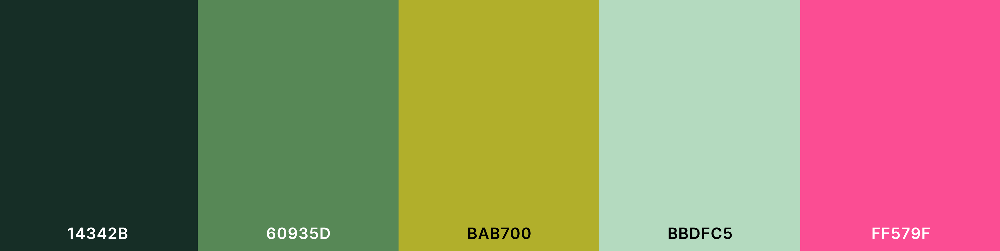

"It's more than just cool, it's coooler"
At CooolerthanCoolors, we strive to be coooler than Coolors, our main uncool competitor. Below are links to our cooolest features.
(To prove that we are coooler than Coolors, we have given you some examples.)
 copy.png)
Check out our cooolor generator
Take a look at our "inspiration," Coolors (to see how much coooler we are)
Meet our founder, Lemon P. Cat
Browse the Palette Gallery
Help
As a growing community pushing ourselves to provide you with the best quality experience, we guarantee that our service exceeds that of Coolors. That is why the name of our website is CooolerThanCoolors, because we are, in fact, coooler.
7.20.2023 Donation of 1,000 cat yogurts from: The Addams Family
7.19.2023 Donation of 320 fish soups from: Catventureland
7.18.2023 Donation of 102938401928340918230498123948 fish soups from: Richie Cat
Click this link to donate cat yogurt and be featured on the "Recent Donations" page
Click this link to donate fish soup and be featured on the "Recent Donations" page
7.20.23 The dangerous "DON'T CLICK THIS!!!!!" link has been made available for all users to access.